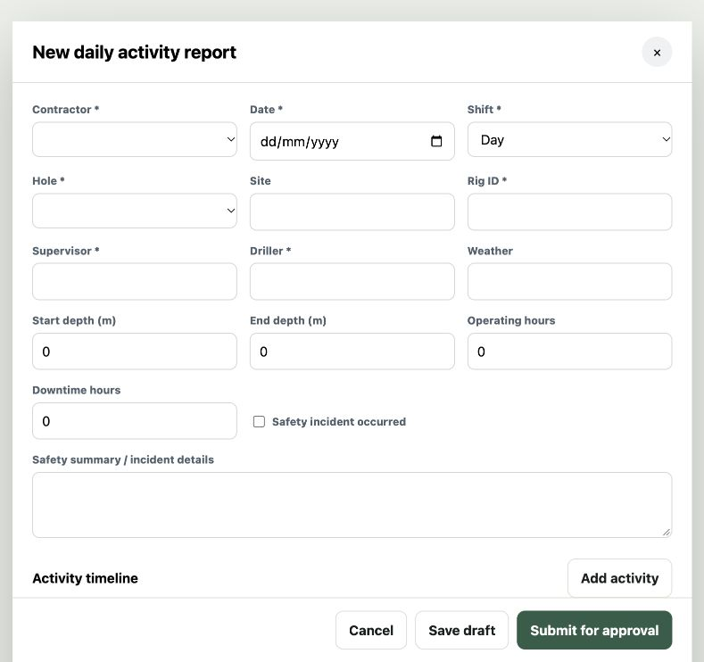

Capture the shift.
Record the rig, hole, start and end depths, hours, crew, consumables and delays. Save a draft or submit the DAR when it is ready.
Daily activity reports / Approvals / Invoicing
DrillOps
Make DARs easier for the crew—and approvals and invoicing easier for everyone who handles them next.
Record the work once, give the client a report they can review and keep the operational detail available when it is time to check charges.

From the rig to the office
A Daily Activity Report is more than a record of metres. It explains the shift, supports the client’s review and gives the office the detail behind the invoice.
Record the rig, hole, start and end depths, hours, crew, consumables and delays. Save a draft or submit the DAR when it is ready.
Approve the report, raise a query or reject it with a reason. Keep the decision and review history alongside the report.
Use the report detail, contract rates and invoice register to reconcile the work claimed and follow up discrepancies.
Example / A drilling shift
The driller records the metres completed, operating hours and time lost to a breakdown. The client can review that context before approving the report. When the invoice arrives, the office can refer back to the same shift record while checking the charges.
Make the handovers easier
Designed for drilling contractors, client representatives and project managers, with access controlled by organisation and project.
Capture the activity timeline, crew, materials, safety details and observations in a structured daily report.
See which reports need attention and keep review notes with the submission, so the crew knows what needs correcting.
Bring invoice review, purchase orders and contract rates into the management workspace. Compare charges with the recorded work.
Review production, borehole progress and budget information without losing the connection to daily operations.
DrillOps
Use the Sign in button above with your organisation’s account.